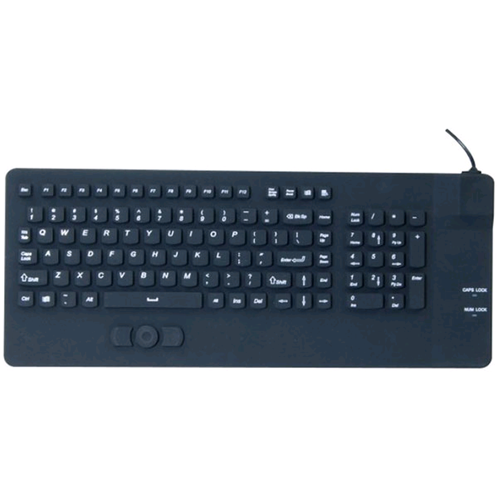

Le Clavier
L Clavier est une interface homme-machine munie de touches permettant à l'utilisateur d'entrer dans l'ordinateur une séquence de données, notamment textuelle. Les touches sont généralement des boutons en plastique reliés chacun à un interrupteur électronique; elles sont similaires aux boutons d'une souris, d'une télécommande ou d'une manette de console de jeu. les clavier peuvent être virtuels ou tactiles.
Le clavier permet , à la manière des machines à écrire, de saisir des caractères ( lettres, chiffres, symboles, ...). IL s'agit donc d'un périphérique essentiel d'entrée pour l'ordinateur; car c'est grâce à lui qu'il nous est facile d'envoyer des commandes.
